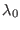
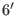
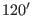

Next: Basic McStas
Up: McStas neutron ray-trace tutorial
Previous: Basic neutron scattering
In the McStas formulation of a neutron scattering instrument, all
objects apart from the neutron ray are referred to as components. This
includes for instance
- Source The exit of a neutron production facility, where
neutron rays of certain velocities are emitted into some
portion of space.
- Monochromator (Idealized) crystal that is used to select
neutrons of a single wavelength1  to probe the sample with (monochromator) or to
analyze with (analyzer).
- Sample An object altering the neutron physical properties
in some sense, examples used here are:
- Vanadium. Scatters incoming neutron rays incoherently.
- PowderN. Can be thought of as a large number of crystals,
each scattering neutron rays according to Braggs law, thereby
producing N concentric Debye Scherrer cones. This sample also
has the posibility of adding inchoherent, eleastically scattered
neutron rays.
- Monitors Objects monitoring or registering neutron ray
characteristics. In the exercises below are used different types
of detectors or monitors:
- Monitor. Single monitor, detecting the number of neutrons flying
through a plane. (User defined opening size).
- PSD_monitor. Square monitor, detecting the number of
neutron rays passing through a plane, divided into
pixels. Square regions of a plane. (User defined resolution
and opening size).
- PSD_monitor_4PI. As PSD_monitor but shaped like a sphere.
- L_monitor. Wavelength monitor, measuring the different
wavelengths of the passing neutron rays. (L is for
 ).
).
- Monitor_nD. General monitor for detecting all sorts of
physical properties of the neutron ray. In our cases used with
options:
- 'single' - as PSD_monitor but only one small square.
- 'banana' - as PSD_monitor but shaped like a curved,
horizontal band.
- Collimators Devices controling the direction and divergence
of the neutron ray.
- Collimator_linear A series of parallel absorbing neutron plates
that limits the beam divergence.
Typical values are  to .
More information on the McStas components is available by using the
mcdoc program (You may need to set the BROWSER system variable
to your webbrowser of choice):
mcdoc -s , Shows a html list of all the components
mcdoc Monitor.comp , Shows the documentation for a given component
mcdoc -M , brings up the McStas manual in PDF format
mcdoc -c , brings up the McStas component manual in PDF format
Next: Basic McStas
Up: McStas neutron ray-trace tutorial
Previous: Basic neutron scattering
Peter Kjær Willendrup
2015-11-12